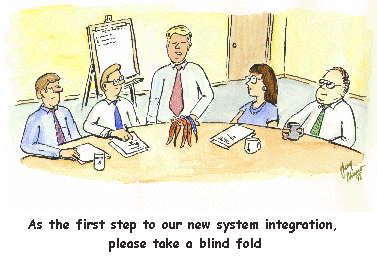
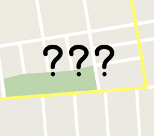
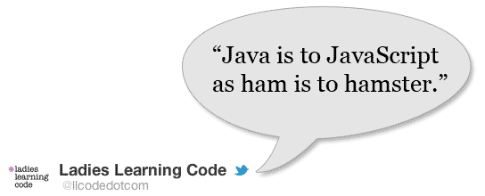
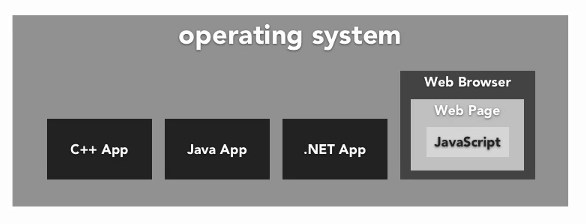
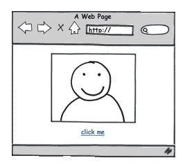
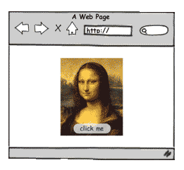
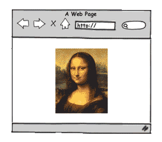

Welcome to Ladies Learning Code!
In partnership with:
In partnership with:
(Interactive code slides thanks to CoderDeck!)
3 2 tools you need to get started
Choose a modern web browser that has good, built-in development tools to help make building web pages easier.
(If you are unable to install Chrome:
install
Firefox and
Firebug
.)
There are many, many free and paid options* but let's keep it simple for our mentors today and just use the same editor.
*Others include: TextMate, Notepad++, and Text Wrangler.
Ask a group of developers what they use and arguments will ensue -- it's a very personal choice! ;)
Do you already have your own hosted website? FTP software will let you copy the files you work on today to somewhere where the rest of the world can see them!
Again, there are many, many free and paid options.
FileZilla
is good when you're more advanced.
Programming and JavaScript
It's a
programming language
designed to run in your web browser to
manipulate content on web pages.
It's a
programming language
designed to run in your web browser to
manipulate content on web pages.
A program is a set of instructions meant for a computer to execute.
Computers are fast but blind.

Think about a tourist that stops you to ask for directions:
The clearer the instructions, the more likely they will get to their destination.

Suppose I want a computer to say hello to using my name.
Break down the steps as much as possible:
Programming is about having a conversation with your computer.
Computers only understand things when you speak to them in a certain way. Much like English or any other natural language, programming is about sticking to grammar rules -- this is called syntax .
Computers have come a long way since their binary days (0 1 0 0 1 0 0 0 0 1 0 0 0 1 0 1 0 1 0 0 1 1 0 0 0 1 0 0 1 1 0 0 0 1 0 0 1 1 1 1) so meet them half-way.
Different programming languages have different syntax.
Here are two ways a computer could say hi to me:
Java
Scanner userInput = new Scanner(System.in);
String name;
System.out.print("What's your name? ");
name = userInput.next();
System.out.println("Hello, " + name);
JavaScript ( Try it out now! )
var name;
name = window.prompt("What's your name?",'');
document.write("Hello, " + name);
They might vaguely look the same (as a lot of programming languages do) but they are not related at all.

(Java was really popular at the time so Netscape just hijacked the name.)
It's a
programming language
designed to run in your web browser to
manipulate content on web pages.
C++, Java, and .NET are also programming languages but they can be run directly by the operating system (e.g. Windows, Mac, Linux).
JavaScript is typically meant to be run in a web browser (e.g. Safari, Firefox, Chrome, Internet Explorer).

Java, .NET, PHP or Ruby can be considered server-side or "back-end" web technology because the code is typically compiled and executed by the operating system of a computer serving up web pages.
JavaScript is referred to as a client-side or "front-end" web technology because it's interpreted by the web browser.

At any time, someone can right-click and "view source" on a web page to see all the JavaScript that went into it.
(I suggest that you do this yourself every time you see something you like!)
Whereas for server-side code, it's sometimes a mystery what technology is running on a server.
It's a
programming language
designed to run in your web browser to
manipulate content on web pages.
JavaScript was meant to manipulate webpages written in HTML and works in tandem with CSS.
| HTML (Hypertext Markup Language) is the markup language. |
CSS (Cascading Style Sheets) is the style sheet language. |
JavaScript is the programming language. |
|  |  |  |
| It should define the content. | It should define the presentation | It should define behaviour. |
For the most part, JavaScript will run the same in various web browsers but sometimes they say "hi" with different accents.
Imagine a British accent versus a Texas accent -- it's still English underneath but there's some variations and unique slang.
This is especially noticeable with newer "HTML5" features.
Insert Internet Explorer joke here. ;)
JavaScript is essential for "AJAX", "Web 2.0", and "HTML5" websites.
Try this experiment: Turn off JavaScript in your web browser. Go to the JavaScript settings for Chrome (
chrome://settings/content
) and select "Do not allow any site to run JavaScript"
Then visit your daily sites.
e.g. Google , Facebook , Twitter
(Remember to turn JavaScript back on to see this presentation!)
Note the sometimes subtle and sometimes major differences:
The modern web just sort of gives up without JavaScript!
Especially "one-page apps" where the experience is very seamless.

Like
this one